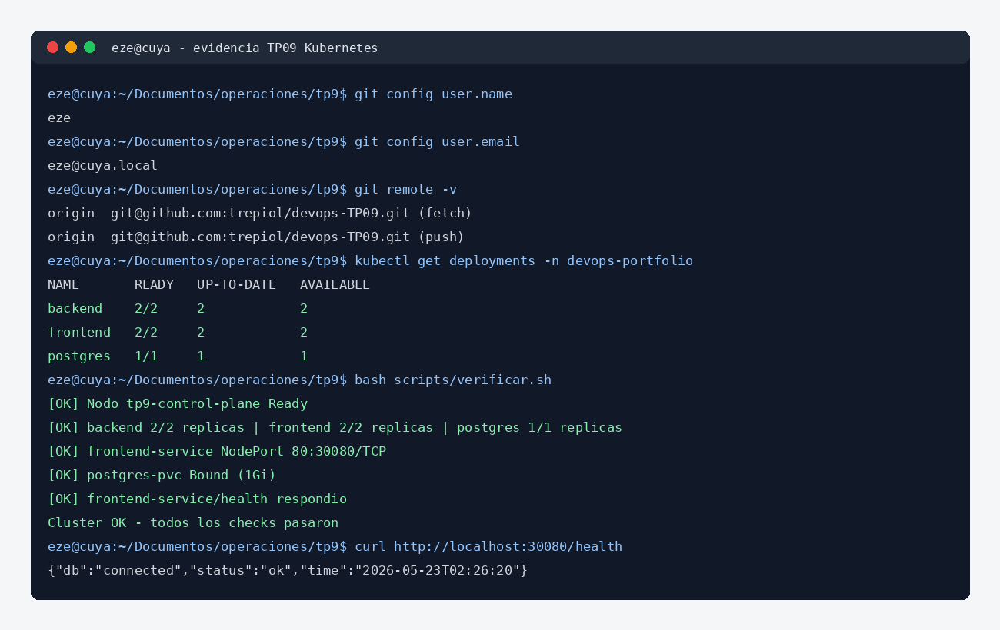

| Dato | Valor |
|---|---|
| Equipo y usuario | eze@cuya |
| Carpeta de trabajo | /home/eze/Documentos/operaciones/tp9 |
| Repositorio | https://github.com/trepiol/devops-TP09 |
| Usuario Git | eze <eze@cuya.local> |
| Imagen usada del TP06 | tr3piol/devops-portfolio:latest |
| Cluster usado | kind local, con puerto 30080 expuesto al host. |
En este TP desplegué la app de notas en Kubernetes. La idea fue pasar de una app Docker a una arquitectura con Namespace, Deployments, Services, Secret, ConfigMap y PVC. Para esto usé la imagen del backend que ya estaba publicada en Docker Hub y armé el frontend con Nginx dentro del cluster.
En la evidencia se ve el usuario Git, el repo remoto, los deployments listos y el healthcheck de la aplicación.

Para hacer la práctica usé un cluster local con kind. Lo configuré con un mapeo del puerto 30080 para poder entrar a la app desde el navegador del host.
eze@cuya:~/Documentos/operaciones/tp9$ ./bin/kind create cluster --name tp9 --config kind-config.yml --kubeconfig ./kubeconfig eze@cuya:~/Documentos/operaciones/tp9$ KUBECONFIG=./kubeconfig ./bin/kubectl get nodes
NAME STATUS ROLES VERSION tp9-control-plane Ready control-plane v1.35.0
Comentario: la guía proponía Killercoda o un cluster local. Yo usé kind porque me permitió dejar todo probado sin depender del tiempo de un laboratorio externo.
Armé el proyecto con los manifests separados por componente.
eze@cuya:~/Documentos/operaciones$ mkdir -p tp9/manifests/{base,db,backend,frontend} tp9/scripts tp9/docs
eze@cuya:~/Documentos/operaciones$ cd tp9
tp9/ ├── manifests/ │ ├── base/ │ ├── db/ │ ├── backend/ │ └── frontend/ ├── scripts/ ├── docs/ └── README.md
Primero creé el namespace devops-portfolio para agrupar todos los recursos del TP.
eze@cuya:~/Documentos/operaciones/tp9$ kubectl apply -f manifests/base/namespace.yml
Archivo principal:
apiVersion: v1 kind: Namespace metadata: name: devops-portfolio
Para Postgres usé un Secret con las credenciales, un PersistentVolumeClaim de 1Gi, un Deployment y un Service ClusterIP.
eze@cuya:~/Documentos/operaciones/tp9$ kubectl apply -f manifests/db/ eze@cuya:~/Documentos/operaciones/tp9$ kubectl rollout status deployment/postgres -n devops-portfolio
| Recurso | Uso |
|---|---|
postgres-secret | Guarda usuario, password y nombre de base. |
postgres-pvc | Reserva almacenamiento persistente para los datos. |
postgres | Deployment con una réplica de Postgres. |
postgres-service | Service interno para que el backend llegue a la base por DNS. |
Después desplegué el backend usando la imagen publicada en Docker Hub:
tr3piol/devops-portfolio:latest
El backend quedó con 2 réplicas, rolling update, probes y variables desde ConfigMap/Secret.
eze@cuya:~/Documentos/operaciones/tp9$ kubectl apply -f manifests/backend/ eze@cuya:~/Documentos/operaciones/tp9$ kubectl rollout status deployment/backend -n devops-portfolio
La conexión a la DB se hizo usando el Service interno postgres-service:5432.
Para el frontend usé nginx:alpine y monté la configuración con un ConfigMap. De esa forma no tuve que crear una segunda imagen solo para el HTML y el proxy.
eze@cuya:~/Documentos/operaciones/tp9$ kubectl apply -f manifests/frontend/ eze@cuya:~/Documentos/operaciones/tp9$ kubectl rollout status deployment/frontend -n devops-portfolio
El Service del frontend es NodePort y expone la app en el puerto 30080.
Para no aplicar los manifests a mano cada vez, armé un script que aplica todo en orden: namespace, DB, backend y frontend.
eze@cuya:~/Documentos/operaciones/tp9$ bash scripts/deploy.sh
[23:24:19] Aplicando namespace [23:24:19] Aplicando base de datos deployment "postgres" successfully rolled out [23:24:41] Aplicando backend deployment "backend" successfully rolled out [23:25:13] Aplicando frontend deployment "frontend" successfully rolled out
Verifiqué los recursos principales con kubectl get all,pvc.
eze@cuya:~/Documentos/operaciones/tp9$ kubectl get all,pvc -n devops-portfolio -o wide
pod/backend-785b774cff-5bh2n 1/1 Running pod/backend-785b774cff-hbxrs 1/1 Running pod/frontend-5464c66c7d-8lz9k 1/1 Running pod/frontend-5464c66c7d-rnm8f 1/1 Running pod/postgres-6f6fb9b7c6-gkk8n 1/1 Running deployment.apps/backend 2/2 deployment.apps/frontend 2/2 deployment.apps/postgres 1/1 service/frontend-service NodePort 80:30080/TCP persistentvolumeclaim/postgres-pvc Bound 1Gi
Probé la app desde el host usando el puerto expuesto por kind.
eze@cuya:~/Documentos/operaciones/tp9$ curl http://localhost:30080/health
{"db":"connected","status":"ok","time":"2026-05-23T02:26:20.422512"}
Interpretación: el mensaje "db":"connected" confirma que el request entró por el frontend, llegó al backend y el backend pudo conectarse a Postgres dentro del cluster.
También armé un script para revisar nodos, pods, deployments, services, PVC y healthcheck interno.
eze@cuya:~/Documentos/operaciones/tp9$ bash scripts/verificar.sh
[OK] Nodo tp9-control-plane Ready [OK] backend 2/2 replicas [OK] frontend 2/2 replicas [OK] postgres 1/1 replicas [OK] frontend-service NodePort 80:30080/TCP [OK] postgres-pvc Bound (1Gi) [OK] frontend-service/health respondio Cluster OK - todos los checks pasaron
Subí los manifests y scripts al repositorio del TP09.
eze@cuya:~/Documentos/operaciones/tp9$ git init eze@cuya:~/Documentos/operaciones/tp9$ git add . eze@cuya:~/Documentos/operaciones/tp9$ git commit -m "TP09: deploy Kubernetes de la app de notas" eze@cuya:~/Documentos/operaciones/tp9$ git branch -M main eze@cuya:~/Documentos/operaciones/tp9$ gh repo create trepiol/devops-TP09 --public --source=. --remote=origin --push
Repositorio: https://github.com/trepiol/devops-TP09 Commit: 34fbdf43344f9c30c27982ab27ccfe5eb54c702a Autor: eze <eze@cuya.local>
kubectl get nodes kubectl get all,pvc -n devops-portfolio kubectl rollout status deployment/backend -n devops-portfolio kubectl logs -l app=backend -n devops-portfolio kubectl describe deployment backend -n devops-portfolio kubectl scale deployment backend --replicas=3 -n devops-portfolio kubectl rollout undo deployment/backend -n devops-portfolio
tr3piol/devops-portfolio:latest, que viene del TP06.nginx:alpine con ConfigMap. Me pareció más simple porque el frontend del TP06 es HTML estático con configuración Nginx.Como mejora, dejaría los tags de imagen fijos por commit en vez de usar latest.
eze@cuya:~/Documentos/operaciones/tp9$ kubectl set image deployment/backend \ backend=tr3piol/devops-portfolio:sha-cc7224c \ -n devops-portfolio eze@cuya:~/Documentos/operaciones/tp9$ kubectl rollout status deployment/backend -n devops-portfolio eze@cuya:~/Documentos/operaciones/tp9$ kubectl rollout history deployment/backend -n devops-portfolio
Justificación técnica: latest sirve para laboratorio, pero en un despliegue más serio conviene fijar un tag inmutable. Así sé exactamente qué versión estoy corriendo y puedo hacer rollback con más control.
postgres-service.El TP09 quedó desplegado en Kubernetes con los recursos pedidos. La app quedó expuesta por NodePort, el backend corre con 2 réplicas, Postgres tiene persistencia y la verificación final confirmó que el cluster está funcionando.